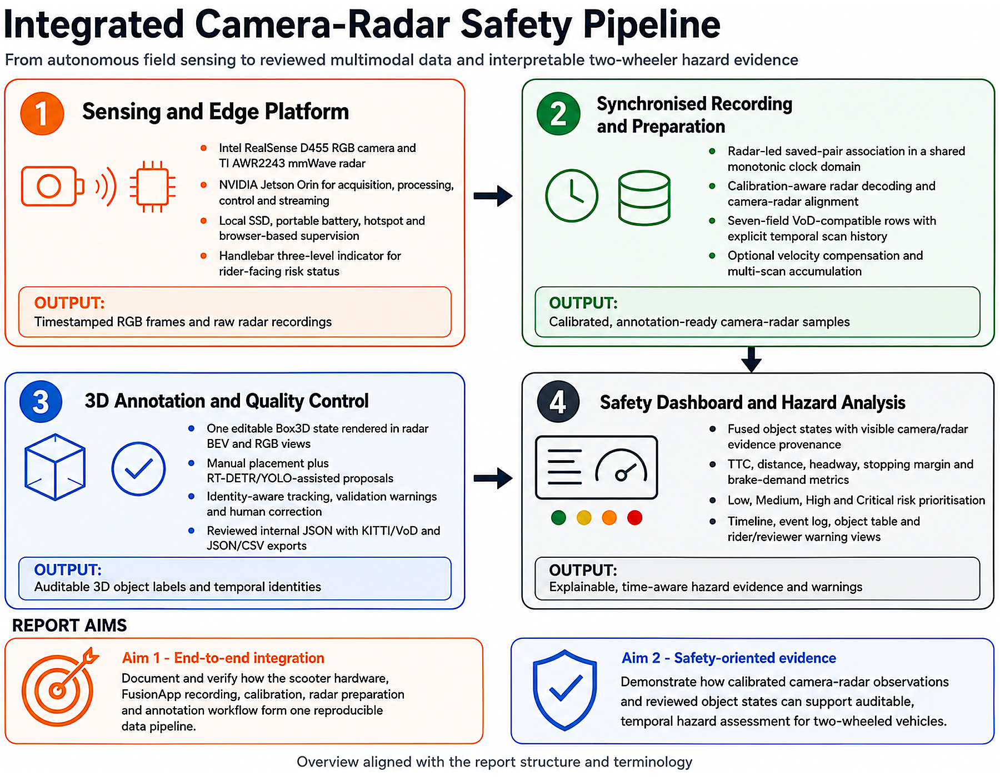
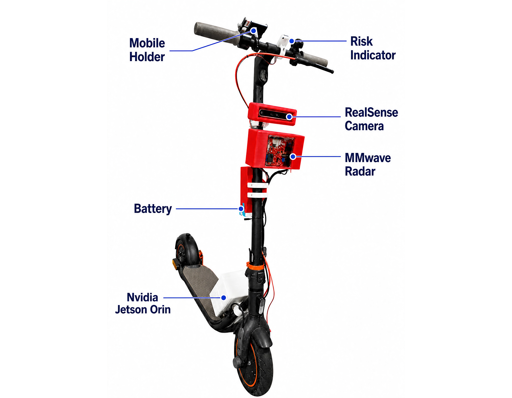
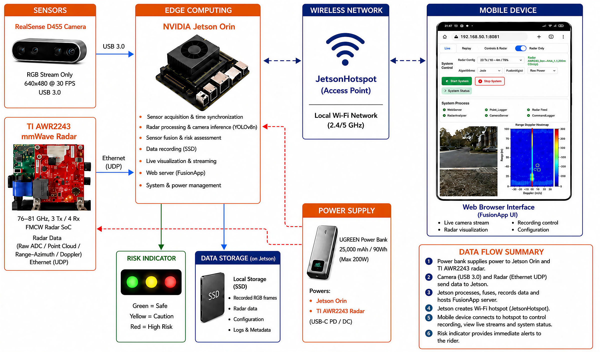
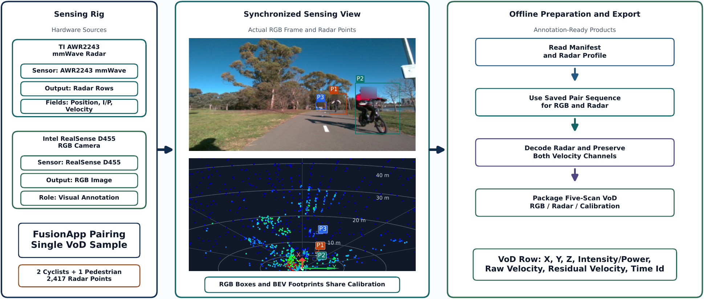
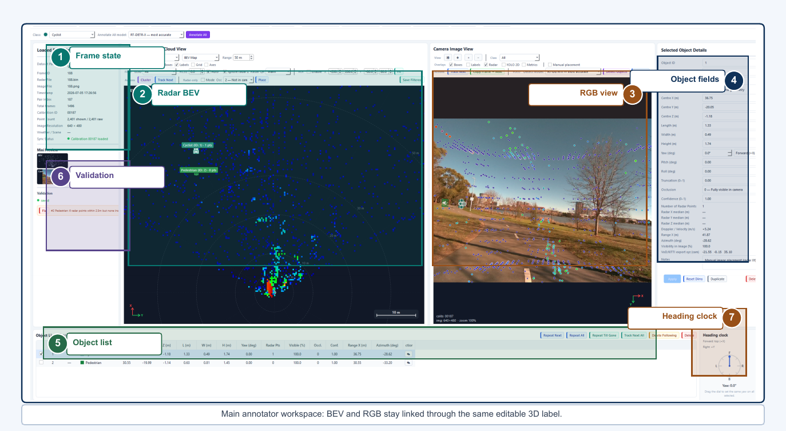
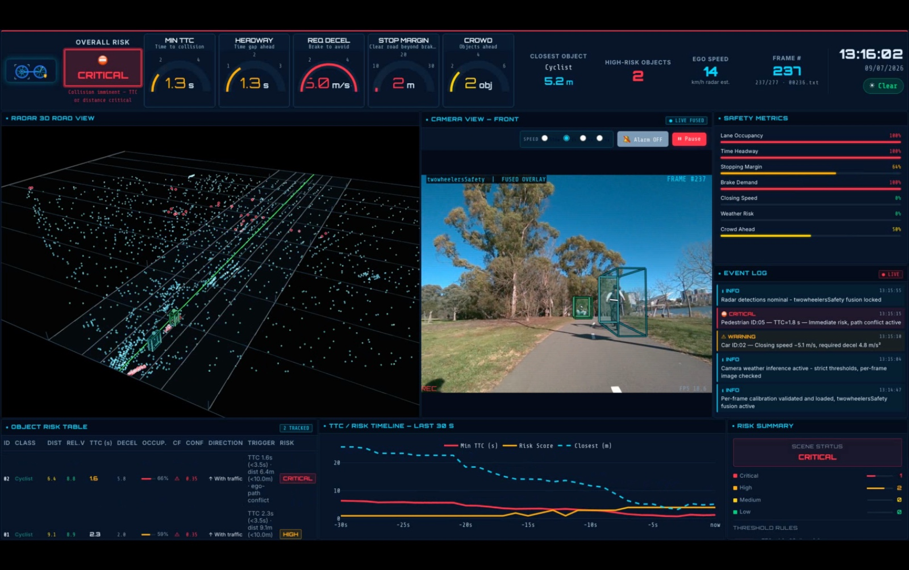

A camera and mmWave radar mounted on a scooter, fused on an embedded edge computer, turned into synchronized datasets, reviewed 3D labels, and a rider-facing risk warning — entirely onboard.
Two-wheeled vehicles put riders in traffic with almost no reaction time and no physical protection. This project mounts a forward-facing RGB camera and a mmWave radar on a scooter, processes both streams entirely onboard, and turns the fused evidence into an interpretable, rider-facing risk warning — with no dependence on external compute or network infrastructure.
The system is split into four components, each in its own repository and each detailed in the full integration report below.


Each stage's output is the next stage's trusted input — reliable synchronization enables auditable annotation, and auditable annotation enables risk metrics a rider can actually trust.

Camera, radar, and edge computer are rigidly mounted on the vehicle and run independently of any external network.
jetsonhotspot Wi-Fi access point
Raw streams become calibrated, View-of-Delft-compatible samples ready for annotation.
[X, Y, Z, I/P, v_r, v_rc, time_id]
Every label is a single calibrated 3D box, checked in both radar and camera space before it's trusted.
Box3D rendered as both a radar BEV footprint and an RGB wireframelabel_2, and JSON/CSV
Fused evidence becomes interpretable metrics and a risk level the rider can act on immediately.
Short clips of each stage in action, on the real hardware and interfaces.
.mp4 clips into any GitHub issue or PR comment box, copy the auto-generated github.com/user-attachments/assets/… link GitHub gives you, and paste it into each href below. Remove this note once your real clips are linked.
Replace the links below with your actual repository URLs.
Onboard acquisition system: camera/radar drivers, Jetson pipeline, local web server.
github.com/your-org/fusionapp-hardware →Radar–camera synchronization, calibration, and VoD-compatible dataset export.
github.com/your-org/vod-sync-pipeline →3D annotation tool with BEV/RGB dual view, detection assist, and tracking.
github.com/your-org/radar-camera-annotator →Fused risk dashboard: TTC, brake demand, and rider-facing alerts.
github.com/your-org/safety-dashboard →Hardware integration, synchronization mathematics, annotation tool architecture, and dashboard risk logic — written up in full.
Open Report.pdf ↗Developed as part of the RoadSafetyOnTwoWheelers project.